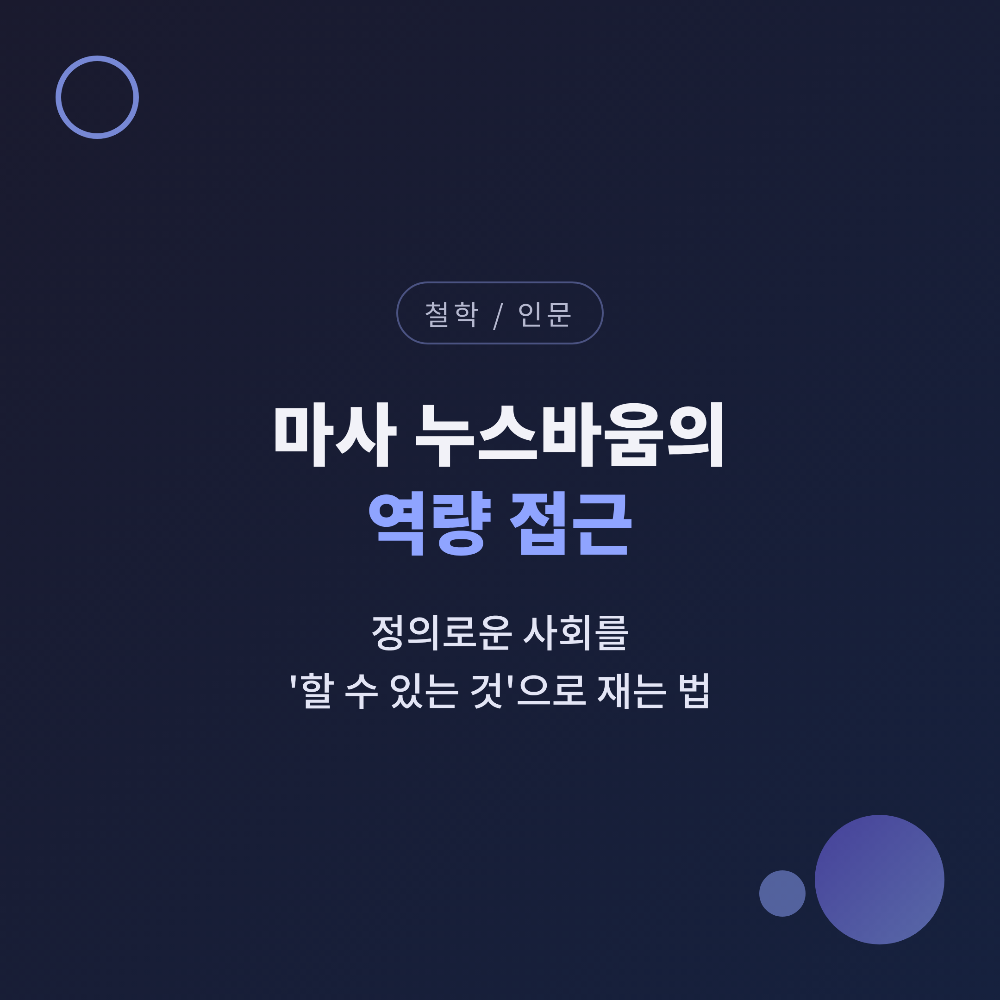
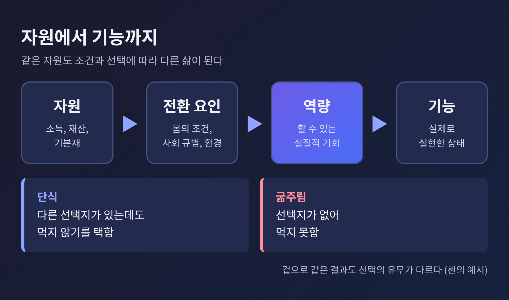
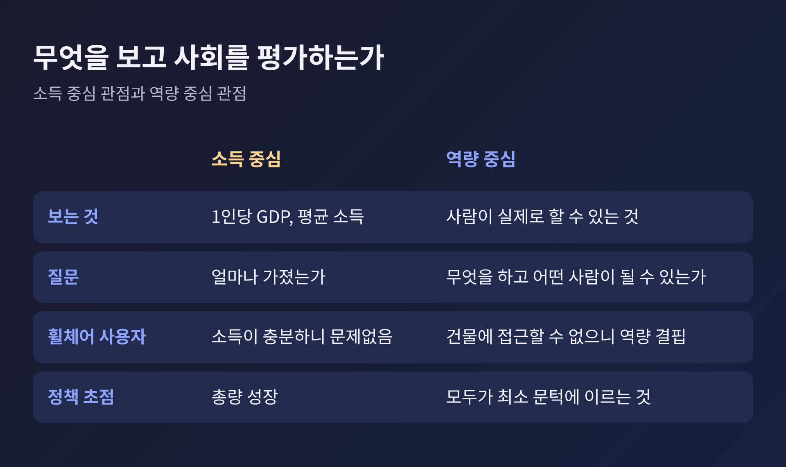
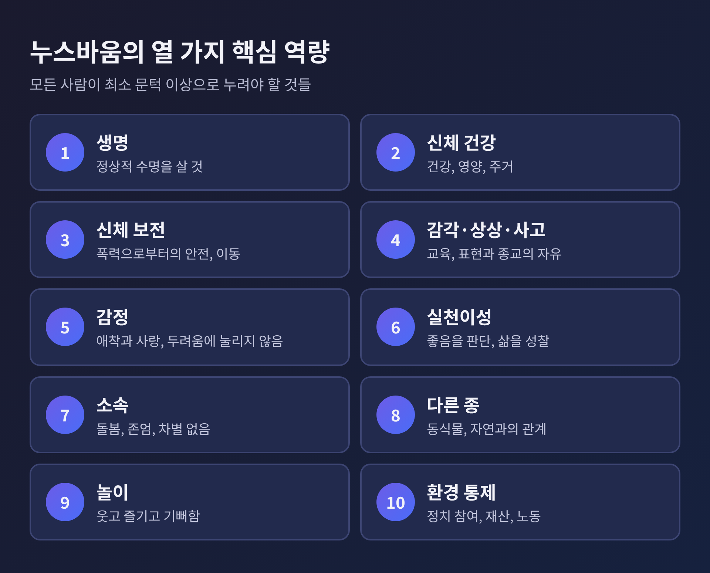
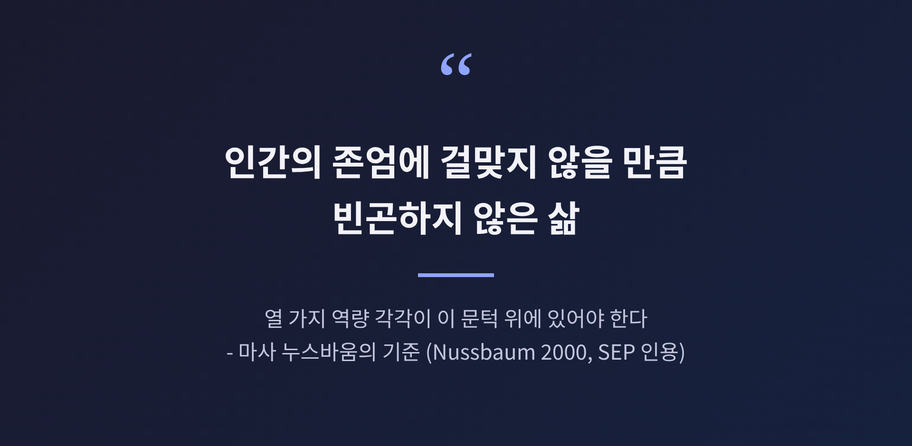
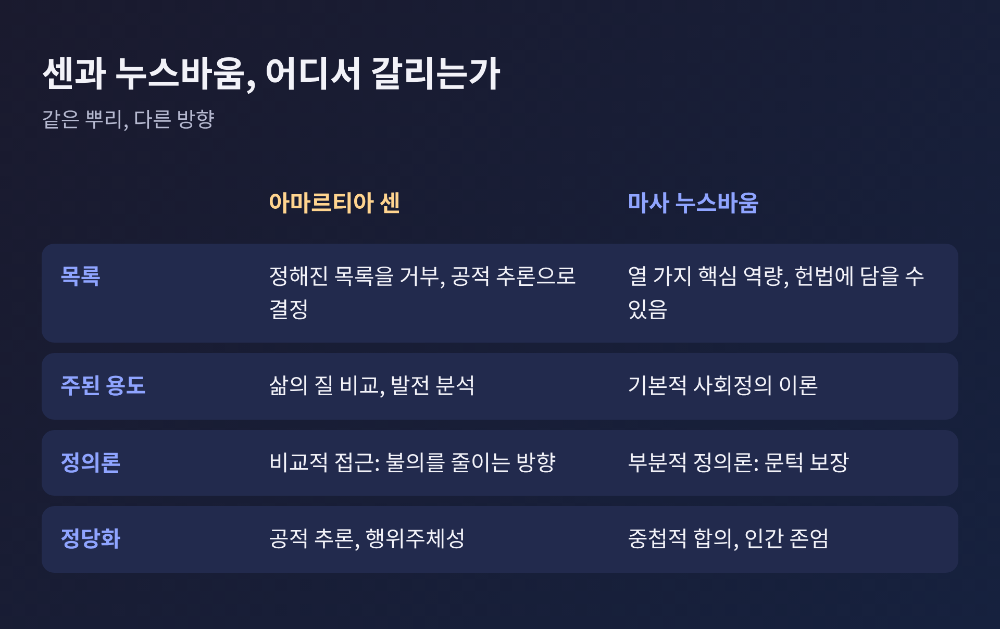
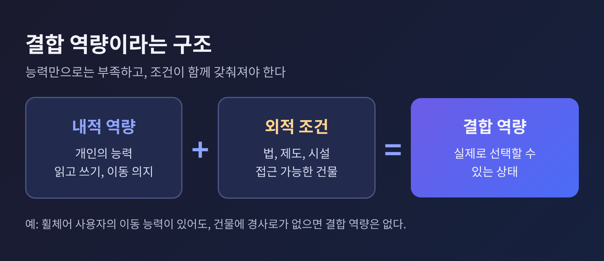

이번 글에서는 마사 누스바움의 역량 접근을 정리해 보겠습니다. 핵심은 한 문장입니다. 사회의 정의는 사람이 얼마나 가졌는가가 아니라, 실제로 무엇을 할 수 있고 어떤 사람이 될 수 있는가로 가늠해야 한다는 것입니다. 센과의 차이, 열 가지 핵심 역량, 그리고 이 생각이 왜 오늘의 질문과 닿는지 차례로 살펴봅니다.
한 나라의 성과를 말할 때 가장 먼저 꺼내는 숫자는 GDP입니다. 평균 소득이 오르면 사회가 나아졌다고 말하기 쉽습니다.
누스바움은 이 방식이 중요한 것을 놓친다고 봅니다. GDP는 삶의 질이나 기본적인 필요가 채워졌는지를 재지 못합니다. 분배가 매우 불평등한 나라도 성장했다는 평가를 받을 수 있습니다.
예를 들어 보겠습니다. 부유한 휠체어 사용자가 있습니다. 돈은 충분하지만 공공건물에 들어갈 방법이 없습니다. 이 사람에게 부족한 것은 소득이 아니라 접근할 수 있는 길입니다. 한 서평은 장애인에게 필요한 것을 제대로 이해하려면 순수한 경제적 척도 너머를 봐야 한다고 짚습니다.
역량 접근은 바로 이 지점에서 출발합니다. 시선을 자원에서 사람의 실질적 자유와 기회로 옮기는 것입니다.
용어부터 정리하겠습니다. 역량은 사람이 원한다면 이룰 수 있는 행함과 존재를 뜻합니다. 장애물이 치워진 상태에서의 실질적 기회라고 이해하시면 됩니다. 기능은 그 역량이 실제로 실현된 상태입니다.
투표할 수 있는 사람이 투표하지 않았다면, 역량은 있고 기능은 없는 것입니다. 이 구별이 중요한 이유가 있습니다. 정의가 요구하는 것은 모두가 같은 삶을 살게 하는 일이 아니라, 선택할 수 있는 상태를 보장하는 일이기 때문입니다.
센이 든 예가 이를 잘 보여줍니다. 단식과 굶주림은 둘 다 먹지 않는 기능입니다. 그러나 단식은 다른 선택지가 있는데도 택하는 것이고, 굶주림은 그렇지 않습니다. 겉으로 같아 보이는 결과도 선택의 유무에 따라 전혀 다른 일이 됩니다.
여기에 전환 요인이 끼어듭니다. 같은 자원을 가져도 몸의 조건, 사회의 규범, 주변 환경에 따라 실제 기능으로 바뀌는 정도가 다릅니다. 중증 장애가 있는 사람은 같은 기초 역량에 닿기 위해 비장애인보다 훨씬 많은 소득이 필요할 수 있습니다.

역량 접근은 1980년대에 복지경제학의 대안으로 구상되었습니다. 먼저 길을 낸 사람은 경제학자 아마르티아 센입니다. 센은 1998년 노벨 경제학상을 받았고, 1979년 강연 "무엇의 평등인가"에서 역량 개념을 내놓았습니다.
이 흐름은 제도로도 이어졌습니다. 1990년 유엔 인간개발보고서는 건강, 교육, 소득을 같은 비중으로 묶은 인간개발지수를 처음 내놓았습니다. 마흐붑 울 학이 센 등과 함께 만든 이 지수는 GDP가 늘어도 남는 불평등과 역량 박탈을 드러내려는 시도였습니다. 유엔개발계획은 지금도 사람과 그들의 역량이 한 나라 발전의 궁극적 기준이어야 하며 경제성장만으로는 안 된다고 밝힙니다. 다만 이 지수가 불평등이나 빈곤, 안전까지 담지는 못한다는 점도 스스로 인정합니다.

누스바움은 같은 아이디어를 철학의 언어로 가져와 정의론으로 다듬었습니다. 그는 아리스토텔레스의 번영 개념을 오늘의 말로 옮겨 온전한 삶에 필요한 역량이 무엇인지 묻습니다. 그 답이 2011년 저서 『Creating Capabilities』에 정리된 열 가지 핵심 역량입니다.
누스바움의 목록은 다음과 같습니다. 한국어 명칭은 번역에 따라 다를 수 있어, 이 글에서는 제 번역으로 적습니다.

목록을 보면 건강이나 교육처럼 익숙한 항목 곁에 놀이와 감정, 다른 종과의 관계가 나란히 놓여 있습니다. 인간다운 삶을 생존과 소득으로만 그리지 않겠다는 선언으로 읽힙니다.
이 목록이 정의론으로 작동하는 방식이 문턱입니다. 누스바움은 열 가지 역량 각각이 인간 존엄에 걸맞지 않을 만큼 빈곤하지 않은 삶에 필요하다고 말합니다. 정부는 모든 사람이 각 역량의 최소 문턱에 이르도록 보장할 의무가 있습니다. 구체적으로 문턱이 어디인지는 제가 확인한 자료에 나와 있지 않습니다.
두 가지를 짚어 두겠습니다.
첫째, 열 가지는 서로 맞바꿀 수 없습니다. 건강을 많이 보장했으니 정치 참여는 조금 줄여도 된다는 계산이 통하지 않습니다.
둘째, 보장하는 것은 할 수 있음이지 하도록 강제하는 것이 아닙니다. 환경에 관심이 없을 자유도 있습니다. 다만 관심을 가지려 할 때 길이 막혀 있어서는 안 됩니다.
누스바움은 이 이론을 사회정의의 부분적이고 최소한의 설명이라 부릅니다. 문턱을 넘은 뒤에 정의가 무엇을 더 요구하는지는 열어 둡니다. 겸손한 범위 설정입니다.

두 사람은 같은 뿌리에서 나왔지만 걷는 방향이 다릅니다. 가장 큰 차이는 목록입니다.
센은 정해진 목록을 거부합니다. 이론가가 사회적 논의 없이 정한 하나의 정전적 목록 대신, 공적 추론으로 우리가 가치 있게 여길 이유가 있는 역량을 가려내야 한다고 봅니다. 누스바움은 헌법에 담을 수 있을 만큼 분명한 목록을 내놓습니다.
용도도 다릅니다. 센은 역량 접근을 삶의 질을 비교하고 발전을 분석하는 데 주로 씁니다. 누스바움은 기본적 사회정의 이론으로 씁니다. 센의 『정의의 아이디어』(2009)는 완벽한 정의 사회를 그리기보다 불의를 비교해 덜 부정의한 쪽으로 나아가는 길을 택합니다. 누스바움은 문턱이라는 기준선을 긋습니다.
한 가지 더 있습니다. 누스바움은 센이 나눈 웰빙 자유와 행위주체 자유의 구별을 모호하고 쓸모없다고 보았습니다. 행위주체성은 자신의 접근 전체에 짜여 있다는 것입니다. 또 누스바움은 인간개발 접근과 구별되는 역량 접근에서 인간이 아닌 동물의 역량까지 다룹니다.

센은 누스바움의 고정 목록이 충만한 삶의 모든 요건을 담지 못하고, 그 요건은 사람마다 다르다고 보았습니다. 어느 쪽이 옳다고 단정하기는 어렵습니다. 목록은 힘 있는 기준을 주지만 경직될 위험이 있고, 열린 논의는 유연하지만 기준이 흐려질 수 있습니다.
누스바움은 인도 구자라트의 가난한 여성 바산티의 이야기로 논의를 엽니다. 바산티는 성차별, 영양실조, 불평등한 재산과 상속법, 종교 차별, 가정폭력, 카스트, 정치적 불평등이 겹친 삶을 살았습니다. 이후 NGO인 SEWA의 도움으로 경제적 독립을 되찾고 교육과 활동에서 더 많은 것을 이루었습니다.
여기서 누스바움이 끌어낸 결론이 분명합니다. 1인당 GDP나 외국인 투자가 늘어도 재분배 정책이 없다면 이런 사람의 삶은 직접 나아지지 않는다는 것입니다.
그리고 한 가지 구분이 더 필요합니다. 누스바움은 개인의 능력을 뜻하는 내적 역량과, 거기에 기능을 실제로 선택할 수 있는 사회적, 정치적, 경제적 조건이 더해진 결합 역량을 나눕니다. 바산티가 읽고 말할 능력을 갖는 것만으로는 부족하고, 그 능력을 쓸 수 있는 법과 제도가 갖춰져야 합니다. 이 구분은 제가 확인한 자료 중 한 곳에서만 확인되어, 보조 설명으로만 소개합니다.

균형을 위해 비판도 적어 두겠습니다.
서평가 잉그리드 로바인스는 이 책이 누스바움 자신의 해석을 제시하면서, 실제로는 없는 합의가 있는 듯한 인상을 준다고 지적합니다. 그래서 접근을 더 넓게 '역량주의'로 부르자고 제안합니다. 측정 연구가 짧게만 다뤄진다는 점도 아쉬움으로 꼽습니다.
앤디 레이미는 이름과 달리 역량이 누스바움 전체 이론에서 하는 이론적 일이 놀랍도록 적다고 봅니다. 또 알키르와 블랙은 누스바움의 방법론이 더 총체적인 웰빙 설명이라는 접근의 목표와 어긋난다고 말합니다.
저 역시 목록이 지닌 힘과 위험을 함께 느낍니다. 열 가지가 충분한지, 누가 정하는지에 대한 물음은 여전히 남습니다.
정리하면 이렇습니다.
누스바움이 우리에게 건네는 질문은 단순합니다. 이 사회는 사람들에게 무엇을 할 수 있게 해 주고 있는가. 평균 소득이 아니라 가장 불리한 자리의 한 사람이 실제로 누릴 수 있는 삶을 보라는 요청입니다.
"정의는 가진 것이 아니라 할 수 있는 것으로 잰다."
이 문장 하나를 가슴에 두고 신문의 경제 지표를 다시 읽어 보신다면, 숫자 뒤에 가려져 있던 사람들의 얼굴이 조금은 다르게 보일 것입니다.
참고: Stanford Encyclopedia of Philosophy, Notre Dame Philosophical Reviews, UNDP 인간개발보고서 외 (research.md 참조)